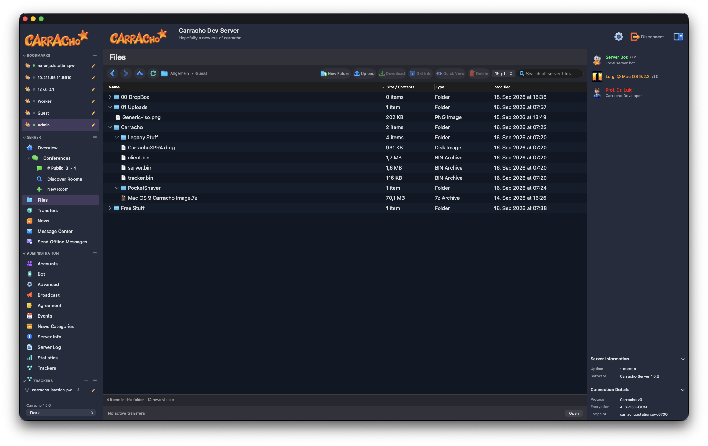
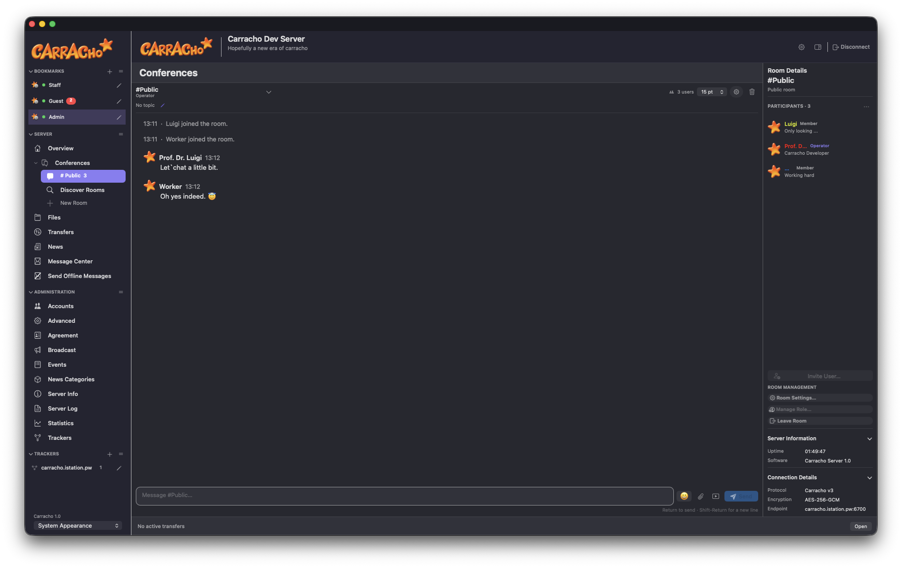
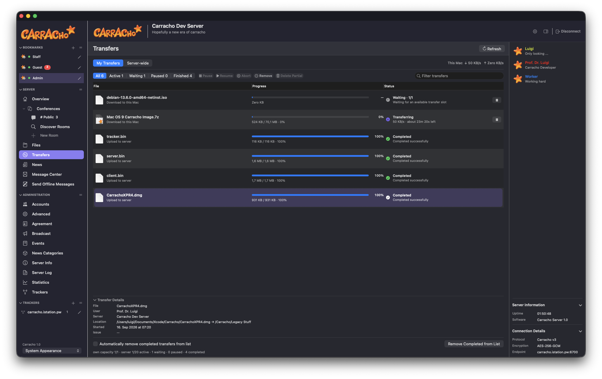
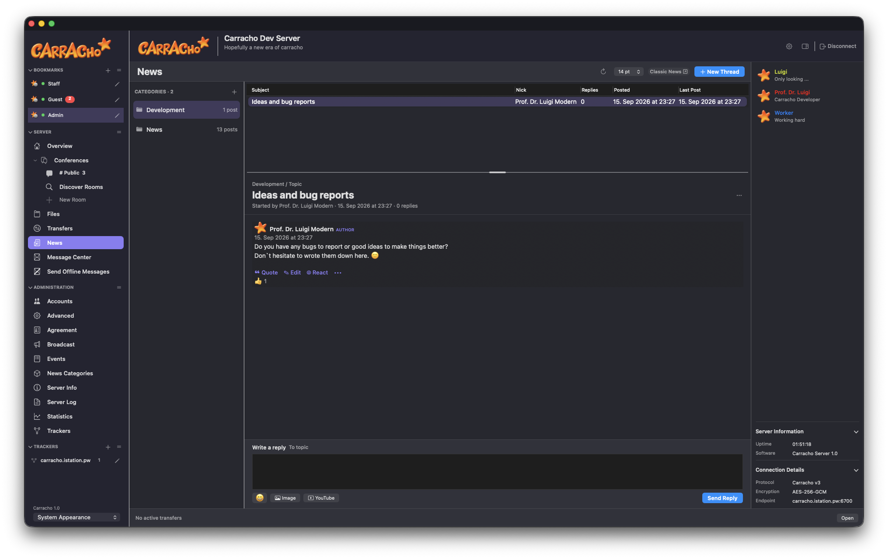
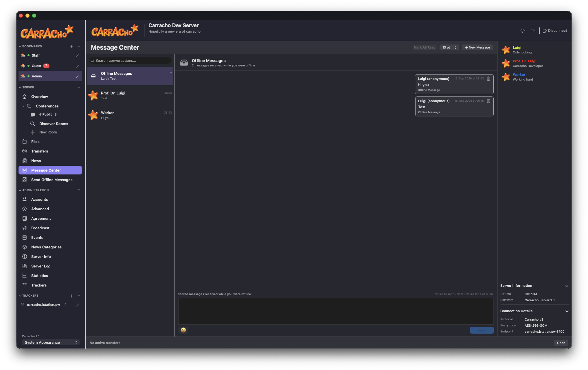

Conferences
Persistent rooms, rich media, reactions, editing, unread badges, moderation and modern room management.
Native chat, files, News, private messages, trackers and complete server administration, rebuilt for modern macOS while keeping Classic compatibility where it matters.
This section is generated from the current release notes when the Publish target runs.
One native client keeps conversations, files, News, transfers, trackers and administration together.
Persistent rooms, rich media, reactions, editing, unread badges, moderation and modern room management.
Browse, search, upload, download, drag and drop, Quick Look and multi-select file operations.
Threaded discussions, categories, replies, reactions, attachments and per-category access policy.
Private conversations, offline messages, local history, search, reactions and unread tracking.
Discover public servers, keep saved trackers in the sidebar and connect without leaving the client.
Accounts, groups, server settings, pending Guest uploads, event logs and remote administration.
Bookmarks and workspaces stay in a persistent sidebar while the active server remains close at hand.





Carracho includes a native macOS server and a headless Linux implementation in C. Host communities, publish files, manage accounts and expose a tracker without depending on a hosted platform.
git clone https://github.com/ProfDrLuigi/Carracho.git
cd Carracho
bash ServerLinux/build.sh
# The runtime user needs full access to:
# /opt/carrachoModern Carracho connections protect control traffic and transfer operations with authenticated encryption. Ephemeral key agreement establishes fresh session material for each connection.
Multi-select Files operations, configurable close-button behaviour, safer first-run administrator credentials and clearer Linux installation requirements.
Explore the source, report issues, follow releases or run your own server.